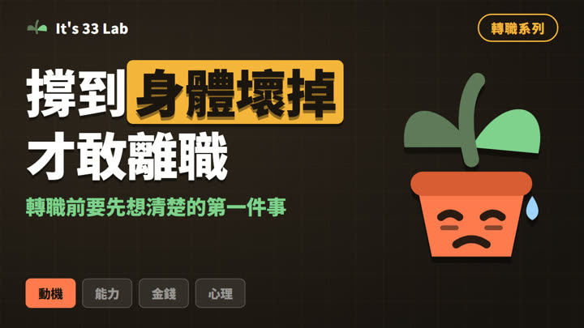
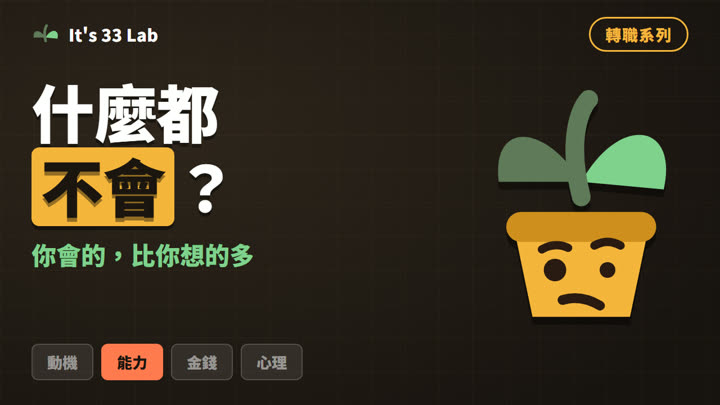
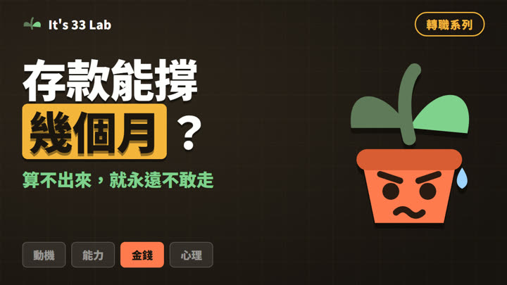
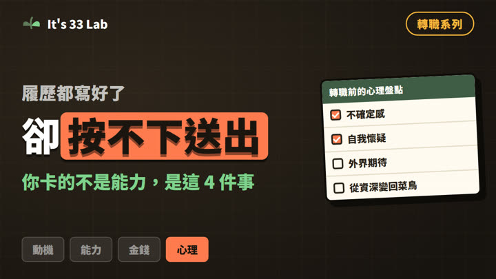
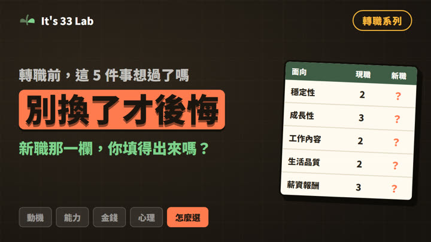
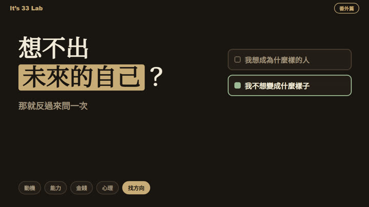
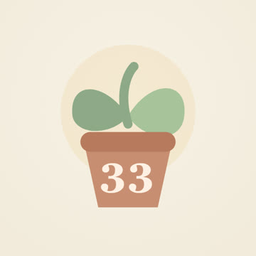

職涯卡住通常卡在三個地方：不知道自己要什麼、不知道有哪些選項、不知道該不該跳。三個工具各解一個。
三個工具對應職涯卡關的三個階段。不用全部做完，挑你現在卡住的那一個就好。
職涯的六個階段，一集一塊：動機、能力、錢、心理狀態、新舊工作比較、找方向。可以只看文字版，也可以配著影片看。

把動機拆成兩種力量，你會發現討厭的反面就是你想要的。
閱讀 →
專業技能、通用能力、軟實力分開盤，找出換工作也帶得走的那一層。
閱讀 →
固定支出、跑道長度、薪資底線。附裸辭前該準備的三件事。
閱讀 →
不確定感、自我懷疑、外界期待、從資深變菜鳥。適應期本來就有 90 到 180 天。
閱讀 →
你只看得到新工作的優點，是因為資訊不對稱。用權重而不是總分做決定。
閱讀 →MBTI、順流致富、蓋洛普怎麼選、怎麼一起看，以及做完之後該怎麼用行動驗證。
閱讀 →
想不出未來不是你不夠上進，是大腦在遠距離的事情上給不出畫面。換個方向問就有了。
閱讀 →
嗨，歡迎來到 It’s 33 Lab。
這裡是一個實驗室，實驗的主題是「怎麼把日子過得更像自己想要的樣子」。
我曾經在完全不同的職涯領域走過一圈，換過方向、也踩過不少坑—— 但也因為這樣，我對「怎麼做選擇」這件事，累積了很多真實的觀察。
到頻道看影片 →我會不定期寄一封信給你：職涯上卡住的地方怎麼拆、 AI 工具實際怎麼用在自己身上，還有我做這個頻道踩過的坑。
免費訂閱 →會開啟 Substack 的訂閱頁（英文介面，填 email 就完成）